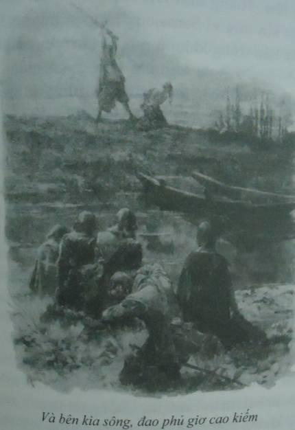

Đó là một đêm buồn thảm.
P.du Terrail, ROCAMBOLE.
Đó là một đêm buồn thảm. Dòng sông Loire hùng hổ dâng nước lên, đe dọa tràn qua những dải đê già cỗi bao quanh thị trấn Meung nhỏ bé. Cơn bão bắt đầu điên cuồng từ chiều hôm trước. Thỉnh thoảng một tia chớp lòe trên hình khối đen sẫm của tòa lâu đài, tạo thành những vệt sáng ngoằn ngoèo đứt đoạn giống như vết roi quất trên những vỉa hè vắng tanh ướt đẫm của thị trấn từ thời Trung cổ. Xa xa bên kia sông, lá bị bứt khỏi cảnh bay tán loạn trong mưa giông, tuồng như cơn lốc đi qua quết thành một đường chia rẽ quá khứ gần và hiện tại xa, có thể nhìn thấy những ngọn đèn pha ô tô từ từ di chuyển trên đường cao tốc Tours đi Orléans.
Ở quán Saint-Jacques, khách sạn duy nhất ở Meung, vẫn còn cửa sổ để đèn. Ánh sáng chiếu lên một mảnh sân dẫn ra ngoài phố. Trong phòng, một thiếu phụ cao lớn, hấp dẫn, mớ tóc vàng buộc túm sau gáy, đang mặc váy áo trước gương. Cái váy đã kéo khóa lên che kín hình xăm hoa huệ trên hông. Ả đứng thẳng người, hai tay quặt ra sau gài móc cái nịt vú đỡ bộ ngực trắng đồ sộ rung rinh theo từng cử động. Rồi ả mặc một cái áo khoác lụa vào. Vừa cải khuy, ả vừa cười với ả trong gương, chắc chắn là hài lòng thấy mình đẹp. Hẳn là ả chuẩn bị cho một cuộc hẹn hò, vì chẳng mấy ai sửa soạn trang phục lúc mười một giờ khuya, trừ phi sắp đi gặp ai đấy. Mặc dù có lẽ nụ cười ẩn giấu sự tàn bạo của ả là vì cái kẹp giấy bìa da mới nằm trên giường có chứa bản thảo Rượu vang Anjou của Alexandre Dumas bố.
Một tia chớp soi sáng mảnh sân nhỏ bên ngoài. Bên dưới mái hiên nước rỏ giọt, Lucas Corso hút nốt điếu thuốc ẩm rồi quăng xuống đất. Gã dựng cổ áo lên che mưa gió. Dưới ánh chớp lóe mãnh liệt như đèn flash của một chiếc máy ảnh khổng lồ, gã thấy khuôn mặt xanh lè như người chết của Flavio La Ponte ẩn hiện giữa tối và sáng, mớ tóc và bộ ria sũng nước. La Ponte trông như một thầy tu đau khổ, hoặc có thể như Athos câm lặng vì tuyệt vọng, u sầu vì trừng phạt. Một hồi lâu không có chớp, nhưng Corso có thể nhận ra, trong cái bóng đen thứ ba khom mình bên cạnh họ dưới những mái chìa, đường nét thanh mảnh của Irene Adler cuộn mình trong áo khoác len. Khi một tia chớp cuối cùng rạch chéo bầu trời đêm và tiếng sấm dội ầm ầm lên những mái nhà bằng đá đen, cặp mắt xanh sáng rực của cô chợt lóe lên dưới cái mũ trùm đầu gắn liền với áo khoác.
Hành trình tới Meung ngắn và căng thẳng. Một khoảng thời gian kinh hoàng trong chiếc xe do La Ponte thuê: đường cao tốc Paris đi Orléans, rồi mười sáu cây số đến Tours. La Ponte ngồi ở ghế hành khách, nghiên cứu tấm bản đồ Michelin mua ở trạm xăng dưới đốm sáng của điếu thuốc lá. La Ponte hoang mang. Không xa nữa đâu, tôi nghĩ ta đi đúng hướng. Phải, chắc thế. Cô gái ngồi trên ghế sau, lặng lẽ. Cô chăm chú nhìn Corso, và gã bắt gặp ánh mắt cô trong gương mỗi khi một chiếc xe sáng rực vượt qua họ. La Ponte đã nhầm, đương nhiên. Họ bỏ lỡ mất chỗ rẽ mà đi theo hướng tới Blois. Khi nhận ra đã nhầm đường, họ phải quay lại, đi ngược chiều trên xa lộ để ra khỏi đó. Corso nắm chặt tay lái cầu khẩn cơn bão buộc đám cảnh sát phải ngồi hết ở nhà. Beaugency. La Ponte khăng khăng đòi qua sông rồi rẽ trái, nhưng may mà họ không thèm nghe hắn. Họ trở lại theo đường cũ, lần này theo quốc lộ 152 - đúng theo con đường d’Artagnan đã chọn ở chương một - trong mưa giông gió giật, dòng sông Loire đen ngòm gầm rú bên phải họ, thanh gạt nước trên kính chắn gió quay như điên, và hàng trăm đốm đen li ti, bóng của những giọt mưa, nhảy múa trước mắt Corso khi họ vượt qua những chiếc xe khác. Cuối cùng họ đi trên những đường phố vắng tanh ở một khu phố cổ với những căn nhà lợp mái, có mặt tiền với những rầm nhà nặng nề dưới dạng cây thập tự: Meung-sur-Loire. Hành trình kết thúc.
“Ả sắp đi,” La Ponte thì thầm. Người hắn đẫm nước, giọng run run vì lạnh. “Sao không vào ngay?”
Corso nhướn mình nhìn lại lần nữa. Liana Taillefer khoác ra ngoài áo cánh một chiếc áo len bó sát để lộ thân hình hấp dẫn, rồi lấy trong tủ đồ ra chiếc áo không tay dài màu tối dùng cho vũ hội hóa trang. Ả chần chừ một chút, nhìn quanh rồi khoác nó lên vai và nhặt tập bản thảo Dumas trên giường. Đúng lúc ấy ả để ý cửa sổ vẫn mở liền bước tới đóng lại.
Corso giơ tay ngăn ả. Một ánh chớp lóe lên ngay trên đầu rọi sáng khuôn mặt đẫm nước của gã. Bóng gã sừng sững trong khuôn cửa sổ, tay đưa ra như thể cáo buộc người đàn bà đang đứng như trời trồng vì kinh ngạc. Milady rú lên man dại như gặp quỷ.
Corso nhảy qua gờ cửa sổ dùng mu bàn tay hất mạnh khiến ả im bặt và ngã xuống giường làm những trang giấy trong Rượu vang Anjou bay lả tả. Cặp kính của gã bị hơi nước từ trong hốc mắt nóng bừng bốc lên che mờ, gã lập tức nhấc kính ra vứt lên cái bàn đầu giường rồi quăng mình lên trên Liana Taillefer đang gắng trở dậy vươn ra cửa. Gã túm tay ả và ghì chặt vùng eo của ả xuống giường trong khi ả vừa quẫy vừa đạp. Ả thật khỏe và Corso tự hỏi không biết La Ponte và cô gái mất mặt ở đâu. Trong khi chờ họ tới giúp, gã cố giữ chặt cổ tay và tránh để những móng tay như vuốt sắc cào vào mặt. Hai người quấn và nhau và lăn lộn trên tấm ga trải giường, cuối cùng thì cẳng chân Corso nằm giữa hai chân ả và mặt gã vùi lấp vào bộ ngực ả. Gần sát như thế, cảm nhận chúng qua làn áo len mỏng, gã lại nghĩ thật khó tin rằng chúng đàn hồi đến thế. Gã cũng cảm thấy thân dưới mình cương lên và tức giận chửi thề trong lúc vật lộn với một ả Milady có sức khỏe của một nhà vô địch bơi lội. Mi ở đâu khi ta cần, gã cay đắng nghĩ thầm. Rồi La Ponte tới, lắc mình thật lực như con chó ướt và nghĩ cách trả thù cho lòng tự hào tổn thương của mình, và trên hết cho tấm hóa đơn khách sạn đã tạo ra một lỗ hổng trong ví hắn. Trận đấu bắt đầu theo lề lối giang hồ.
“Tôi không nghĩ ông định hiếp bà ta,” cô gái nói.
Cô vẫn đội các mũ trùm ngồi xem trên bậu cửa sổ. Liana Taillefer đã thôi giãy dụa và nằm im. Corso nằm trên người ả, còn La Ponte giữ một tay và một chân ả đè xuống.
“Đồ lợn,” ả nói to và rõ.
“Đồ điếm,” La Ponte lẩm bẩm, thở không ra hơi vì cuộc vật lộn.
Sau mẩu đối thoại ngắn ngủi này, mọi người đều bình tĩnh lại. Chắc rằng ả không thoát đi được, họ để ả ngồi dậy. Ả xoa nắn cổ tay, ánh mắt độc địa lướt qua Corso và La Ponte. Corso đứng giữa ả và cánh cửa. Cô gái vẫn ngồi trên cửa sổ lúc này đã đóng lại. Cô đã bỏ mũ trùm ra quan sát Liana đầy tò mò. La Ponte sau khi dùng tấm ga giường lau khô tóc và râu, bắt đầu thu lượm các trang bản thảo vương vãi trong phòng.
“Ta cần nói chuyện một chút,” Corso nói. “Như những người hiểu biết.”
Liana Taillefer trừng mắt nhìn gã. “Chẳng có gì để nói hết.”
“Đó là cái sai của bà, thưa quý bà xinh đẹp. Bây giờ chúng tôi tóm được bà rồi, tôi có gặp cảnh sát thì cũng chẳng sao. Hoặc bà nói chuyện với bọn tôi, hoặc bà phải giải thích với họ. Tùy chọn.”
Ả cau có nhìn quanh như con thú săn tìm cách thoát khỏi bẫy.
“Cẩn thận,” La Ponte nói. “Ả định làm gì đấy.”
Đôi mắt ả lóe lên sắc như dao. Corso uốn lưỡi nói như diễn kịch. “Liana Taillefer,” gã nói. “Hoặc có thể phải gọi bà là Anne de Breuil, nữ Bá tước de la Fère. Bà cũng có tên Charlotte Backson, Nam tước phu nhân Sheffield và quý bà de Winter. Bà đã phản bội chồng và mọi người tình. Một nữ sát thủ và kẻ đầu độc, cũng là tay chân của Richelieu. Hoặc với một biết danh quen thuộc hơn - gã dừng lại đột ngột - Milady.”
Gã ngừng lại vì vấp phải dây đeo cái túi của mình từ dưới gầm giường thò ra. Không rời mắt khỏi Liana Taillefer và cánh cửa, gã lôi nó ra. Rõ ràng ả muốn chạy trốn ngay khi có cơ hội. Gã kiểm tra mọi thứ trong túi và thở phào nhẹ nhõm khiến mọi người, gồm cả Liana Taillefer, đều ngạc nhiên nhìn gã. Chín cánh cửa của Varo Borja vẫn trong đó, còn nguyên vẹn.
“Ăn chắc,” gã nói và cầm nó lên. La Ponte tỏ ra đắc thắng, tuồng như Queequeg vừa đâm trúng con cá voi. Nhưng cô gái không mảy may xúc động, giống như một khan giả bàng quan. Corso nhét cuốn sách vào túi. Gió đêm thổi vi vu ngoài cửa sổ khi cô đứng. Chốc chốc một tia chớp nhoáng lên soi rõ hình cô, rồi một tràng sấm đùng đục và nghèn nghẹt vang lên khiến tấm kính chắn mưa rung bần bật.
“Thời tiết rất phù hợp,” gã nói. “Như bà thấy, Milady, chúng tôi không muốn lỡ việc… Chúng tôi chuẩn bị xét xử công bằng.”
“Với cả nhóm người vào giữa đêm khuya, chẳng khác gì một lũ hèn hạ.” ả xổ ra. “Đúng như người ta đã làm với ả Milady kia. Chỉ thiếu người đao phủ thành Lille.”
“Tất cả đều hợp thời điểm,” La Ponte xen vào.
Người đàn bà dần dần lấy lại tự tin. Dù chính ả nhắc tới đao phù song điều đó có vẻ không dọa được ả. Ả nhìn trả La Ponte với vẻ thách thức. “Tôi thấy các người đã về đúng vai rồi đấy,” ả nói thêm.
“Bà không cần ngạc nhiên mới phải,” Corso đáp trả. “Bà và đám tòng phạm của bà đã làm mọi cách để bảo đảm như vậy mà.” Khuôn mặt gã vặn vẹo rồi hóa ra nụ cười của loài sói, không đùa cợt cũng không thương xót. “Tất cả chúng ta đã vui vẻ cả.”
Người đàn bà bạnh môi. Ả dùng một móng tay đỏ như máu vạch ngang khăn trải giường. Corso đưa mắt theo dõi cử chỉ của ả, cảm thấy mê hoặc như thể đó là một lưỡi dao, và gã rùng mình nhớ lại nó đã lướt như thế nào qua mặt gã trong khi vật lộn.
“Ông không có quyền làm như vậy,” ả nói. “Các người là những kẻ đột nhập.”
“Bà lầm. Chúng tôi là một phần trong trò chơi, giống như bà.”
“Nhưng các người không biết luật chơi.”
“Lại nhầm rồi, Milady. Bằng chứng là chúng tôi đang ở đây.” Corso cầm cái kính trên tủ đầu giường, đeo lên mắt và lấy ngón tay đẩy nó lên. “Đó là điều rất tinh tế - chấp nhận bản chất của trò chơi. Chấp nhận cuốn tiểu thuyết hư cấu bằng cách bước vào câu chuyện và tuân theo lôgic của nó chứ không phải của thế giới bên ngoài…. Sau đó thì dễ rồi. Trong thế giới thực, nhiều chuyện xảy ra ngẫu nhiên, nhưng trong tiểu thuyết hầu như mọi điều đều lôgic.”
Móng tay đỏ chót của Liana Taillefer dừng lại. “Trong tiểu thuyết?”
“Đặc biệt trong tiểu thuyết. Nếu nhân vật chính theo lôgic nội tại của tội phạm, hắn rồi sẽ gặp mặt tội phạm. Đó là lý do khiến người hùng và kẻ ác, thám tử và tên sát nhân luôn gặp nhau ở phần kết.” Gã mỉm cười, thích thú với lý lẽ của mình. “Bà nghĩ sao?”
“Tuyệt,” Liana Taillefer châm chọc, còn La Ponte miệng há ra, dán mắt vào Corso đầy ngưỡng mộ. Ả nhếch mép cười mỉa. “Đạo hữu William Baskerville[1], tôi đoán thế.”
“Đừng hời hợt thế, Milady. Bà quên Edgar Allen Poe. Và chính Dumas… Tôi cứ nghĩ bà đọc rộng hơn cơ.”
“Ông thấy đó, ông đang lãng phí tài năng với tôi rồi,” ả nói. “Tôi không phải thính giả thích hợp.”
“Tôi biết. Đó chính là lý do tôi tới đây - để bà đưa chúng tôi tới chỗ ông ta.” Gã nhìn đồng hồ. “Hơn một tiếng đồng hồ nữa sẽ là ngày thứ Hai đầu tiên của tháng Tư.”
“Tôi muốn biết bằng cách nào ông đoán được cả chuyện đó.”
“Tôi không đoán.” Gã quay sang cô gái bên cửa sổ. “Cô ấy nhét cuốn sách vào tay tôi. Và trong một cuộc điều tra như thế này, một cuốn sách có ích hơn là thế giới bên ngoài. Đó là một thế giới riêng mình tự tại, không bị ai quấy rầy. Giống như phòng thí nghiệm của Sherlock Homles.”
“Đừng khoe mẽ nữa, Corso,” cô gái bực tức nói. “Ông gây đủ ấn tượng với bà ta rồi đó.”
Người đàn bà cau mày nhìn cô gái, như thể lần đầu tiên trông thấy cô. “Cô ta là ai?”
“Đừng nói với tôi bà không biết. Bà chưa từng gặp cô ấy ư?”
“Người ta có nhắc tới một phụ nữ trẻ, nhưng không biết cô ta từ đâu tới.”
“Ai nhắc?”
“Một người bạn.”
“Cao, đen, để ria, sẹo trên mặt? Rách môi? Anh bạn thân Rochefort của chúng ta! Tôi rất muốn biết anh ta đang ở đâu. Hy vọng không xa. Hai vị chọn nhân vật thật là xứng đáng, đúng không?”
Nghe vậy Liana Taillefer ấn sâu móng tay vào tấm ga như thể đó là da thịt Corso, ánh mắt lóe lên điên cuồng. “Các nhân vật khác thì tốt đẹp gì hơn?” Trong cái lối Milady hất đầu ra sau nhìn xoáy vào từng người trong bọn họ chứa đựng một vẻ khinh thường ngạo mạn. “Athos, một tên say. Porthos, một gã ngộ. Aramis, một kẻ mưu mô đạo đức giả…”
“Đó là một cách nhìn nhận,” Corso nói.
“Im đi. Ông biết cái gì?” Ả ngừng lại, vươn cằm ra, nhìn Corso như thể đến lượt gã. “Còn d’Artagnan, hắn là kẻ tệ nhất trong đám. Một tay kiếm ư? Hắn chỉ quyết đấu bốn lần trong Ba người lính ngự lâm. Thắng một lần vì Jussac nhào vào chân hắn, một lần nữa vì Bernajoux tự mình gieo vào mũi kiếm của hắn trong khi mù quáng tấn công. Khi đánh nhau với người Anh, hắn chỉ làm được mỗi việc là tước vũ khí của ông Nam tước. Và phải dùng tới ba cú đâm mới hạ gục nổi Công tước De Wardes. Còn về lòng khoan dung độ lượng…” ả hất mặt về phía La Ponte, “d’Artagnan thậm chí còn keo kiệt hơn cả anh bạn này của ông. Lần đầu tiên hắn mua đồ uống cho các bạn là ở Anh, sau vụ gã thầy tu[2]. Ba mươi năm sau.”
“Tôi nhận thấy bà là một chuyên gia, mặc dù đáng ra tôi phải đoán ra từ trước. Bao nhiêu là tiểu thuyết trường thiên mà bà bảo ghét cay ghét đắng… Xin có lời khen. Bà đã hoàn thành tuyệt diệu vai bà góa phát ốm lên vì tính ngông cuồng của ông chồng.”

“Tôi không vờ vịt. Hầu hết những thứ của ông ấy đều tầm thường xoàng xĩnh, toàn giấy tờ cũ vô dụng. Giống như bản thân Enrique. Chồng tôi là một gã khờ. Ông ấy không biết cách đọc cho ra những ý nghĩ thâm sâu hay đánh giá chất lượng. Ông ấy chỉ là một kẻ đần độn loanh quanh sưu tầm bức ảnh tượng đài và chẳng hiểu gì hết.”
“Không như bà?”
“Tất nhiên. Ông biết hai cuốn sách đầu tiên tôi đọc là gì không? Những người đàn bà nhỏ và Ba người lính ngự lâm. Mỗi cuốn đều gây ấn tượng sâu sắc theo cách riêng của nó.”
“Cảm động quá.”
“Đừng ngu ngốc thế. Ông hỏi, tôi đáp. Có những độc giả chất phác, như Enrique khốn khổ, và có những độc giả đi sâu vào bản chất sự vật, nhìn thấu suốt hơn chứ không chỉ thấy toàn khuôn mẫu sáo mòn: d’Artagnan can đảm, Athos hào hiệp, Porthos hảo tâm, Aramis trung thành…Thật buồn cười!” Rồi ả phá lên cười thật, tiếng cười của ả đặc phường tuồng và đanh ác như tiếng cười của Milady. “Không ai có ý kiến. Ông có biết hình ảnh tồn tại lâu dài nhất với tôi, cái mà tôi ngưỡng mộ nhất là gì không? Hình ảnh người đàn bà chiến đấu đơn độc, trung thành với ý tưởng của chính mình và với người đàn ông bà ta chọn làm chủ nhân, chỉ tin tưởng một mình mình, bị bốn người anh hùng kỳ thực là những con rối giết một cách đê tiện. Rồi lại có một đứa con thất lạc từ lâu của bà ta, đứa trẻ mồ côi xuất hiện hai mươi năm sau nữa!” Ả cúi đầu ủ rũ, và ánh mắt đầy thù hận của ả hầu như khiến Corso lùi lại một bước. “Tôi có thể hình dung một bức tranh khắc như thể nó ở ngay trước mặt - dòng sông đêm, bốn tên vô lại quỳ gối cầu nguyện nhưng không một chút thương xót. Và bên kia sông, đao phủ giơ cao kiếm trên cái cổ trần của người đàn bà…”
Một tia chớp đột ngột rọi ánh sáng hung dữ lên khuôn mặt biến dạng của ả - cái cổ trắng mịn, đôi mắt chứa đầy khung cảnh bi kịch ả vừa mô tả sống động như thể chính mình trải qua rồi. Rồi những tấm kính cửa sổ rung lên dưới tiếng sấm ì ầm.
“Đồ khốn,” ả thì thầm, chìm đắm trong suy tư, Corso không biết ả muốn nói gã và những người cùng đi hay d’Artagnan và bạn chàng.
Cô gái lục tìm trong túi lấy ra Ba người lính ngự lâm. Giống như một khán giả vô thưởng vô phạt, cô tìm một trang. Khi đã thấy, cô không nói lời nào mà vứt sách lên giường. Đó là bức minh họa Liana Taillefer đã miêu tả.
“Victa iacet Virtus,” Corso lẩm bẩm, run lên trước cảnh tương tự như trong bức minh họa thứ tám của Chín cảnh cửa.
Người đàn bà bình tĩnh lại khi nhìn bức tranh. Ả nhíu mày, lại trở nên lạnh lùng và độc đoán.
“Đó là sự thực,” ả thừa nhận. “Không thể nói rằng d’Artagnan tượng trưng cho phẩm hạnh. Hắn ta chỉ là kẻ cơ hội. Và đừng nhắc tới kỹ năng cưa gái của hắn. Trong cả bộ tiểu thuyết hắn chỉ chinh phục được ba người đàn bà, hai lần trong đó là nhờ lừa bịp. Mối tình vĩ đại nhất của hắn là với một mẹ đĩ bé nhỏ chân to, thị tỳ của hoàng hậu. Một người khác là ả hầu phòng người Anh bị hắn lợi dụng một cách đê tiện.” Tiếng cười của Liana vang lên như một lời nhục mạ. “Còn đời sống tình cảm của hắn trong Hai mươi năm sau thì sao? Sống với bà chủ nhà trọ để tiết kiệm tiền thuê phòng… Công cuộc chinh phục mới đẹp đẽ làm sao! Hầu phòng, chủ trọ và đầy tớ!”
“Nhưng d’Artagnan không quyến rũ Milady,” Corso ranh mãnh vạch ra.
Một tia chớp giận dữ lại lần nữa phá vỡ lớp băng trong mắt Liana Taillefer. Nếu ánh mắt có thể giết người, có lẽ Corso đã chết lăn dưới chân ả.
“Hắn không quyến rũ,” người đàn bà trả lời. “Thằng khốn đó mạo nhận người khác để luồn vào giường cô ta.” Thái độ của ả lại lạnh cứng. “Ông và hắn có thể kết thành một cặp rất hợp đấy.”
La Ponte chăm chú nghe. Tựa như có thể thấy bộ não hắn đang vận động kịch liệt. Hắn nhăn nhó. “Các người không định nói là các người đã…”
Hắn quay sang cô gái mong giúp đỡ. Hắn luôn là người cuối cùng hiểu được chuyện gì xảy ra. Nhưng cô vẫn dửng dưng như thể chẳng có gì liên quan đến mình.
“Tôi là một thằng ngu,” La Ponte kết luận. Hắn đi đến bên cửa sổ và bắt đầu đập đầu vào khuôn cửa.
Liana Taillefer nhìn hắn khinh bỉ rồi nói với Corso, “Ông phải đưa hắn theo hay sao?”
La Ponte nhắc đi nhắc lại, “Tôi là một thằng ngu,” và đập mạnh đầu vào cửa sổ.
“Hắn nghĩ mình là Athos,” Corso giải thích.
“Aramis thì đúng hơn. Ngu xuẩn và tự đại. Ông có biết là hắn mê mệt với cái bóng của mình trên giường khi làm tình không?”
“Tôi không tin.”
“Tôi đảm bảo là hắn như thế đấy.”
La Ponte đã quên cái cửa sổ, “Chúng ta lạc đề rồi đấy,” hắn đỏ mặt nói.
“Đúng vậy,” Corso nói. “Ta đang nói về phẩm hạnh, Milady. Bà đang lên lớp cho chúng tôi về chủ đề liên quan đến d’Artagnan và các bạn.”
“Tại sao không? Tại sao một lũ đàng điếm lợi dụng đàn bà, tiêu tiền của họ, chỉ nghĩ đến thành đạt và làm giàu mà lại tử tế hơn Milady, một người đàn bà thông minh và dũng cảm đã quyết định làm việc cho Richelieu, phục vụ trung thành, chấp nhận nguy hiểm tính mạng vì ông ấy.”
“Và phạm tội giết người vì ông ta.”
“Chính ông đã thừa nhận điều đó lúc nãy - lôgic nội tại của câu chuyện.”
“Nội tại? Điều đó tùy thuộc vào cách nhìn của bà. Việc giết chồng bà xảy ra bên ngoài chứ không phải bên trong phạm vi cuốn tiểu thuyết. Cái chết của ông ta là thật.”
“Ông điên rồi, Corso. Không ai giết Enrique… Ông ấy tự treo cổ.”
“Và tôi cũng nên nghĩ rằng Victor Fargas tự trầm mình xuống nước? Và bà Nam tước Ungern đêm qua đã quá mải mê với cái lò vi sóng, đúng thế không?”
Liana Taillefer quay sang La Ponte và cô gái, chờ ai đó khẳng định điều ả vừa nghe. Lần đầu tiên từ lúc bọn họ nhảy vào qua cửa sổ, ả có vẻ lúng túng.
“Ông nói về chuyện gì?”
“Về chín bức họa chuẩn,” Corso đáp, “ở trong Chín cánh cửa của vương quốc bóng tối.”
Từ bên ngoài khuôn cửa sổ đóng, có tiếng chuông vang lên xuyên qua mưa gió. Hầu như đúng lúc ấy, chiếc đồng hồ bên trong tòa nhà, ở tầng dưới, gõ mười một tiếng.
“Tôi thấy còn nhiều người điên hơn trong vụ này,” Liana Taillefer nói. Ả nhìn cánh cửa. Có tiếng động đằng sau nó khi tiếng chuông cuối cùng cất lên. Một tia mắt đắc thắng lóe trong mắt ả.
“Cẩn thận,” La Ponte nhổm người thì thầm. Corso biết có gì đấy sắp xảy ra. Gã thoáng thấy cô gái đứng thẳng dậy, căng thẳng và cảnh giác, và gã cảm thấy adrenaline sôi trào trong máu.
Mọi người đều nhìn vào cái tay nắm cửa. Nó xoay thật chậm. Như trong phim.
“CHÀO,” ROCHEFORT NÓI. Y mặc cái áo mưa cài khuy đến cổ lấp loáng nước mưa. Đôi mắt đen sáng rực dưới cái mũ nỉ. Vết sẹo ngoằn ngoèo tái nhợt nổi bật trên khuôn mặt sẫm màu. Bộ ria đen rậm rì tô điểm cho gương mặt người miền Nam. Y đứng bất động ở cửa chừng mười lăm giây, hai tay nhét trong túi áo khoác, đôi giày bết bùn. Không ai nói gì.
“Tôi rất mừng vì anh tới,” rốt cuộc Liana Taillefer nói. Rochefort gật đầu nhanh nhưng không trả lời. Vẫn ngồi ở trên giường, ả chỉ Corso. “Bọn họ trở nên láo xược.”
“Tôi hy vọng chưa đến nỗi quá đáng,” Rochefort nói. Giọng y vẫn y như Corso nhớ lại lúc trên con đường ở Sintra, vui vẻ, có học với ngữ âm khó xác định. Y không rời khỏi cửa, nhìn Corso chằm chằm, như thể La Ponte và cô gái không tồn tại. Môi dưới hắn vẫn còn sưng, có dấu thuốc đỏ và hai vệt chỉ khâu cho vết thương liền miệng. Kỷ niệm sông Seine, Corso thầm nghĩ một cách độc ác. Có vẻ y quan tâm đến phản ứng của cô gái. Nhưng sau phút sửng sốt ban đầu, cô lại tiếp tục đóng vai khán giả bàng quan.
Không rời mắt khỏi Corso, Rochefort hỏi Milady, “Làm sao họ tới được chỗ này?”
Milady phác một cử chỉ mơ hồ. “Bọn họ khôn ngoan.” Rồi liếc nhanh La Ponte. “Một trong số họ thôi.”
Rochefort gật đầu. Hai mắt lim dim, tựa như y đang phân tích tình hình. “Việc này khiến mọi chuyện phức tạp hơn,” y nói rồi nhấc mũ quẳng lên giường.
Liana Taillefer vuốt váy xuống và đứng lên thở dài đồng ý. Corso xoay nghiêng người về phía ả, căng thẳng và do dự. Lúc này Rochefort rút tay ra khỏi túi áo khoác và Corso nhận ra y thuận tay trái. Phát hiện này chẳng giúp gã bao nhiêu - tay trái y cầm một khẩu súng lục nhỏ nòng ngắn màu xanh sẫm gần như đen. Trong khi đó Liana Taillefer bước tới chỗ La Ponte giật lấy bản thảo Dumas trong tay hắn.
“Bây giờ thử gọi tôi là con điếm nữa đi.” Ả ghé sát đến mức có thể đụng vào mặt hắn. “Nếu anh đủ gan.”
La Ponte không làm thế. Mới đẻ ra hắn đã ham sống sợ chết. Nhân vật thợ phóng lao dũng cảm chỉ dành cho những lúc lơ mơ vì rượu cồn. “Tôi chỉ tạt qua thôi,” hắn nhún nhường nói mong thoát khỏi toàn bộ chuyện này.
“Tôi sẽ làm sao nếu không có cậu, Flavio?” Corso nói giọng nhẫn nhục.
La Ponte có vẻ bị xúc phạm. “Anh không công bằng,” hắn nói rồi tới đứng bên cô gái, ở chỗ dường như đối với hắn là an toàn nhất trong phòng. “Theo cách nhìn nào đấy thì đây là chuyện phiêu lưu của anh, Corso. Và cái chết có là gì với một kẻ như anh? Chẳng là gì. Chỉ là thủ tục. Dù gì anh cũng được trả một khoản kếch xù. Và bản chất cuộc đời là bạc bẽo.” Hắn nhìn vào nòng khẩu súng trong tay Rochefort rồi choàng tay qua vai cô gái, thở dài não nuột. “Tôi hy vọng không có gì xảy ra với anh. Nhưng nếu có gì xảy ra thì sẽ khó hơn cho chúng ta: chúng tôi vẫn phải sống tiếp.”
“Đồ phản bội.”
La Ponte ra bộ buồn rầu. “Bạn thân mến, tôi sẽ bỏ qua lời nhận xét cuối cùng này. Anh quá căng thẳng rồi.”
“Đương nhiên. Tôi quá căng thẳng, đồ chuột cống.”
“Câu này tôi cũng bỏ qua.”
“Chó đẻ.”
“Thật vui được thấy các người giữ gìn tinh thần đồng đội của mình,” Milady nói giọng cay nghiệt.
Corso suy nghĩ rất nhanh, dù gã không thể làm gì được. Nghĩ mấy cũng không tước được khẩu súng trong tay Rochefort, mặc dù nó không đặc biệt nhắm vào ai cả. Rochefort coi bộ miễn cưỡng, như thể giơ khẩu súng chỉ để đạt được hiệu quả cần thiết. Nhưng bất chấp khát vọng lớn lao của Corso muốn ghi dăm điểm trước mặt gã mặt sẹo, gã cũng không sở hữu kỹ năng để làm vậy. Không có La Ponte trên đường đua, cô gái là hy vọng duy nhất của gã để thay đổi cán cân lực lượng. Nhưng trừ phi cô là một diễn viên cực kỳ xuất sắc, gã không hy vọng gì ở cánh bên ấy. Irene Adler đã giãy ra khỏi vòng tay La Ponte và ngồi lên cửa sổ quan sát tất cả với vẻ dửng dưng không giải thích được. Tựa như cô đã xác định đứng ngoài chuyện này.
Liana Taillefer bước qua chỗ Rochefort, tay cầm bản thảo Dumas, hể hả vì đoạt lại nó quá dễ. Corso lấy làm lạ vì ả tỏ ra không quan tâm như vậy đối với Chín cánh cửa vẫn nằm trong cái túi nãy giờ dưới chân giường.
“Ta làm gì bây giờ?” gã nghe ả thì thầm với Rochefort.
Gã ngạc nhiên vì Rochefort có vẻ lưỡng lự. Y đưa khẩu súng từ bên nọ qua bên kia. Như thể không biết chĩa nó vào đâu. Trao đổi một cái nhìn đầy ý nghĩa với Milady, y rút tay phải ra khỏi túi áo mà đưa lên trước mặt, do dự. “Không thể để họ ở đây,” y nói.
“Cũng không thể mang họ theo,” ả nói.
Y chậm rãi gật đầu. Xét qua động tác lại nắm chặt khẩu súng, có thể nhận thấy sự không quyết đoán của y đã biến mất. Corso cảm thấy cơ bụng co rút lại khi Rochefort chĩa súng vào mình. Gã cố đưa ra một lời phản kháng hợp cú pháp, nhưng kết quả chỉ là một âm thanh khó hiểu trong cổ họng.
“Ông sẽ không giết anh ta chứ?” La Ponte hỏi.
“Này Flavio,” Corso cố sức nói mặc dù miệng khô khốc. “Nếu tôi thoát lần này, tôi thề sẽ đấm vỡ mặt cậu. Nhất định”
“Tôi chỉ cố giúp thôi mà.”
“Đi mà giúp mẹ cậu khỏi phải ra đứng đường.”
“OK, OK, tôi sẽ câm tịt.”
“Đúng, câm đi,” Rochefort nói. Mũi súng vẫn chĩa vào Corso, y khóa cánh cửa đằng sau lưng và nhét chìa khóa vào túi. Có gì mà mất, Corso nghĩ, mạch máu trên thái dương và cổ tay gã giật giật. Tiếng trống trận Waterloo vang lên đâu đó trong ký ức gã, khi mà, ở thời điểm sáng suốt cuối cùng trước khi cơn tuyệt vọng ập tới, gã thấy mình đang tính toán khoảng cách giữa gã và khẩu súng và thời gian là bao lâu để vượt qua nó. Gã tự hỏi khi nào viên đạn đầu tiên bắn ra và nó sẽ găm vào đâu trên người gã. Xác suất không dính đạn cực nhỏ, nhưng nếu đợi thêm năm giây nữa thì gã chẳng còn cơ hội nào. Rồi thì tiếng kèm xung trận vang lên. Đợt xung trận cuối cùng với Ney tiến ở hàng đầu, người dũng cảm nhất trong những người dũng cảm, trước ánh mắt mệt mỏi của Hoàng đế. Chống lại Rochefort thay vì quân cận vệ Xcốtlen, nhưng viên đạn thì vẫn là viên đạn. Chuyện này thật nực cười, gã tự nhủ ngay trước khi hành động. Và gã tự hỏi không biết viên đạn trong ngực mình là thực hay ảo, tự hỏi không biết liệu có thấy mình phiêu phù trong hư không hay trong cung điện Valhalla[3] dành cho các vị anh hùng huyền thoại hay chăng. Giá mà đôi mắt sáng rực gã cảm thấy đang nhìn chằm chằm vào lưng gã - Hoàng đế? Con quỷ đang yêu? - có chờ đợi để đưa gã qua thế giới bên kia.
Rồi Rochefort làm một điều kỳ quái. Y giơ cao bàn tay không cầm súng như thể muốn nói, “Chờ đã,” rồi bắt đầu nhét lại khẩu súng vào túi. Động tác này chỉ diễn ra rất mau, rồi y lại chĩa súng vào Corso nhưng không có vẻ kiên quyết. Còn Corso, mạch máu chạy ầm ầm, cơ bắp căng cứng, thiếu chút nữa nhảy chồm về phía trước nhưng kìm được, hoang mang, nhận ra bây giờ không phải là lúc để chết.
Sửng sốt, gã nhìn Rochefort đi ngang qua căn phòng, ấn cái múm gọi ra ngoài rồi quay một số điện thoại dài. Từ chỗ mình gã có thể nghe tiếng chuông vang lên trên đường dây và rồi một tiếng cạch.
“Tôi tóm được Corso ở đây,” Rochefort nói. Y chờ, mũi súng vẫn hững hờ trỏ vào một điểm mơ hồ trong không gian. Y vâng dạ hai lần. Rồi nghe tiếp, bất động và nói khẽ OK trước khi gác máy.
“Ông ấy muốn gặp hắn,” y nói với Milady. Hai người quay về phía Corso. Milady bực bội, Rochefort lo lắng.
“Thật nực cười,” ả càu nhàu.
“Ông ấy muốn gặp hắn,” Rochefort nhắc lại.
Milady nhún vai, tiến lên một bước rồi giận dữ lật mấy trang Rượu vang Anjou.“”
“Còn bọn tôi….” La Ponte bắt đầu.
“Anh ở lại đây,” Rochefort chĩa khẩu súng vào mặt hắn nói. Hắn liếm vết thương trên môi. “Cô gái cũng vậy.”
Mặc dù ăn đòn rách môi, y không có vẻ gì hận cô. Corso thậm chí còn tưởng đã bắt một tia mắt hiếu kỳ khi Rochefort nhìn cô. Rồi Rochefort đưa khẩu súng cho Liana Taillefer. “Đừng để họ ra ngoài.”
“Sao anh không ở lại đây?”
“Ông ấy muốn tôi đưa hắn đi. Thế an toàn hơn.”
Milady gật đầu hờn dỗi. Rõ ràng ả đã hình dung mình sẽ đóng một vai khác trong đêm ấy. Nhưng giống như nhân vật hư cấu cùng tên, ả là một kẻ giết người thuê có kỷ luật. Ả đưa Rochefort bản thảo Dumas đổi lấy khẩu súng. Rồi chăm chú nhìn Corso. “Hy vọng hắn không gây phiền phức cho anh.”
Rochefort cười tự tin. Y móc trong túi ra một con dao xếp rồi xem xét rất kỹ, tựa như chỉ vừa mới nhớ ra nó ở đó. Hàm răng trắng sáng rực trên gương mặt đen có sẹo. “Không đâu,” y trả lời, nhét con dao chưa mở vào túi và ra hiệu cho Corso theo kiểu vừa thân ái vừa ác hiểm. Y cầm cái mũ trên giường lên, lấy chìa khóa mở cửa và khoát tay rất điệu ra phía hành lang như thể trong tay y là một cái mũ lớn cắm long chim.
“Vinh hạnh được phục vụ ngài, thưa Đức ông,” y nói, rồi bật tiếng cười khô, ngắn, hết sức phù hợp với một người hầu cận được dạy dỗ cẩn thận.
Trước khi rời đi, Corso nhìn cô gái. Milady đang chĩa súng vào cô và La Ponte, nhưng cô gái quay lưng lại và chẳng hề để ý. Cô dựa đầu vào cửa sổ nhìn mưa gió bên ngoài, bóng cô nổi bật trên nền trời đêm sáng bừng dưới ánh chớp.
HỌ RA NGOÀI trong mưa bão. Rochefort kẹp bản thảo Dumas bên trong áo khoác để tránh mưa. Y dẫn Corso qua những con đường hẹp tới khu phố cổ của thành phố. Từng đợt mưa dữ dội khiến cành cây lắc lư và làm nước bắn tóe tung ầm ĩ trong những vũng nước và trên những tảng đá lát đường. Những hạt mưa to tướng xuyên qua tóc rỏ xuống mặt Corso. Gã dựng cao cổ áo. Thị trấn tối đen không bóng người. Chỉ có ánh sáng của cơn bão thỉnh thoảng bừng lên trên đường phố làm lộ ra những mái nhà kiểu Trung cổ, hình cắt nghiêng đen kịt của Rochefort dưới cái mũ nước rỏ ròng ròng, bóng hai người trên mặt đất đẫm nước. Những luồng điện phóng ra, giống như sấm chớp từ địa ngục quất vào dòng nước cuộn trào trên sông Loire, phát ra âm thanh nghe như tiếng gậy gãy ngang.
“Một đêm huy hoàng,” Rochefort nói, nghiêng đầu về phía Corso để gã nghe thấy trong tiếng ầm ầm của cơn bão.
Có vẻ y rất thuộc đường. Bước đi tự tin, thỉnh thoảng y quay lại để bảo đảm là người đồng hành còn đó. Thực ra thì không cần thiết, vì lúc này Corso sẽ theo y đến tận cổng địa ngục. Và Corso không loại trừ khả năng đó kỳ thực chính là đích đến cuối cùng của họ. Dưới ánh sáng những tia chớp nối nhau, gã nhìn thấy những con đường cổ có mái vòm che, một cây câu bắc ngang qua dòng mương phòng hộ ngày xưa, một biển hiệu Boulangerie-Pâtisserie - Cửa hàng bánh mì bánh ngọt, một quảng trường hoang vắng, một tòa thành tháp hình nón và cuối cùng là cánh cổng sắt với tấm biển Lâu đài Meung-sur-Loire. Thế kỷ XIII-XIIII.
Một cửa sổ sáng đèn phía xa xa, bên kia cánh cổng, nhưng Rochefort rẽ sang trái, Corso theo sau. Họ men theo bức tường phủ đầy cây thường xuân tới một cánh cửa kín đáo chìm vào trong. Rochefort lôi ra một chìa khóa cũ kỹ to tướng bằng sắt nhét vào ổ khóa.
“Jeanne d'Arc từng đi qua cánh cửa này,” y nói với Corso khi mở khóa. Một chớp sáng cuối cùng cho thấy những bậc thang dẫn vào bóng tối. Trong ánh sáng chợt hiện Corso còn thấy Rochefort mỉm cười, đôi mắt đen rực lên dưới vành mũ, cái sẹo thâm tím trên má. Ít nhất thì cũng là một đối thủ xứng đáng, Corso thầm nghĩ. Không ai phàn nàn được về vai diễn của y; đúng là hoàn hảo. Dù Rochefort đã đối xử thế nào với gã, gã bắt đầu cảm thấy một sự đồng cảm kỳ quái với y - dù y là ai - người sắm vai kẻ ác một cách tận tụy đến nhường này. Alexandre Dumas hẳn sẽ vỗ tay tán thưởng.
Rochefort cầm một chiếc đèn pin nhỏ rọi sáng những bậc thang hẹp biến mất dưới tầng hầm.
“Ông đi trước,” y nói.
Bước chân của hai người dội lại ở những khúc quanh. Chẳng mấy chốc Corso rùng mình trong áo khoác ướt đẫm. Khí lạnh, mốc meo, bốc mùi ẩm hàng thế kỷ, dâng lên đón tiếp họ. Ánh đèn pin soi sáng những bậc đá vỡ, những vệt nước trên vòm trần. Cầu thang dẫn tới một hành lang hẹp có những rào chắn han gỉ. Rochefort chợt rọi đèn vào một cái hốc tròn bên trái.
“Đó là những hầm giam ngày xưa của Giám mục Thibault d'Aussigny,” y nới với Corso. “Từ trong đó người ta vứt thẳng xác chết xuống sông Loire. Francois Villon từng là tù nhân ở đây.” Rồi y khẽ ngâm: Ayez pitté, ayez pitté de moi… Hãy rủ lòng thương, hãy rủ lòng thương tôi… Đúng là một tội phạm có học. Tự tin và có ẩn ý giáo huấn. Corso không biết điều này khiến cho tình hình tốt lên hay xấu đi. Song một câu nói đã thoáng hiện trong đầu từ lúc gã bước trên hành lang: Nếu mất tất cả, còn có thể nhảy xuống sông. Nhưng gã chẳng thấy câu đùa này có gì hài hước.
Đường đi lúc này lại vống cao lên dưới máu vòm nước rỏ giọt. Hai con mắt chuột long lánh cuối hành lang, con vật kêu lên một tiếng trước khi biến mất. Lối đi dẫn vào một phòng hình tròn, có một cây cột to ở giữa, trên đó là những khung nhọn đỡ lấy vòm trần.
“Hầm mộ,” Rochefort vừa nói vừa lia đèn pin xung quanh. Y đã trở nên nhiều lời. “Thế kỷ mười hai. Đàn bà trẻ con trốn dưới này khi tòa thành bị tấn công.”
Hết sức thú vị. Nhưng Corso chẳng có tâm trí đâu mà thưởng thức những thông tin do người hướng dẫn kỳ dị cung cấp. Gã khẩn trương và cảnh giác, chờ đợi thời điểm thích hợp. Bây giờ họ đang leo lên một cầu thang xoáy, cơn bão vẫn chớp lên ùng oàng bên ngoài bức tường thành, len lỏi vào trong qua những cửa sổ trượt.
“Chỉ còn vài mét nữa là tới,” Rochefort nói từ phía sau bên dưới. Có vẻ như y đã hoàn toàn hòa hoãn. Cây đèn pin rọi sáng giữa hai chân Corso. “Bây giờ công việc hầu như đã kết thúc,” y nói thêm, “tôi phải nói với ông mấy câu. Dù là gì đi nữa, ông đã làm tốt. Bằng chứng là ông đã đến tận đây… Hy vọng ông không quá coi trọng những việc xảy ra bên sông Seine và ở khách sạn Crillon. Chỉ là rủi ro nghề nghiệp thôi.”
Y không nói nghề nghiệp gì, nhưng không thành vấn đề. Corso chợt xoay người lại rồi dừng bước, giống như để trả lời và hỏi y một câu. Cử động đó không gây nên chút nghi ngờ nào, vì vậy Rochefort không phản ứng gì và không hề chuẩn bị khi Corso cùng lúc nhào lên người y, hai tay hai chân gã chống vào tường nên không bị trượt xuống thang. Tình hình có khác với Rochefort - bậc thang hẹp, tường trơn và không có chỗ vịn, hơn nữa y không đề phòng. Chiếc đèn pin lăn lông lốc trên những bậc thang, nhờ một phép màu nào đó vẫn còn hoạt động được, chiếu sáng trong khoảnh khắc sự việc xảy ra lúc ấy: Rochefort rơi xuống, mắt mở trừng trừng, nét mặt sững sờ, tay vung loạn xạ cố chộp lấy thứ gì đó, cái mũ của y lăn xuống cho đến khi dừng lại trên một bậc thang…. Rồi từ sáu hay bảy mét bên dưới, có một thanh âm uất nghẹn, gì đó nghe như “thịch” hay “bịch”. Corso, vẫn bấu chặt vào tường bằng cả tay lẫn chân nhờ vậy mà không theo đối thủ trong hành trình khó chịu đó, lúc này lập tức hành động. Trái tim đập điên cuồng khi gã nhảy ba bước một xuống thang. Giữa chừng gã dừng lại nhặt chiếc đèn pin. Rochefort nằm tận dưới cùng, cuộn tròn như quả bóng, khẽ cựa quậy đau đớn.
“Rủi ro nghề nghiệp,” Corso nói rồi rọi đèn vào mặt mình để Rochefort nằm trên sàn nhìn thấy nụ cười thân thiện. Rồi gã đá vào đầu y và nghe tiếng nó đập mạnh vào bậc thang dưới cùng. Gã lại giơ chân chực đá lần nữa cho chắc, nhưng liền thấy là không cần nữa: Rochefort nằm há mồm, một dòng máu từ lỗ tai chảy ra. Corso cúi xuống để xem y còn thở không thì thấy là còn. Rồi gã cởi áo mưa của y lục lọi các túi áo. Gã lấy ra con dao xếp, một cái ví đầy tiền, một thẻ căn cước Pháp và tập bản thảo Dumas. Gã giắt tập bản thảo dưới áo khoác, giữa thắt lưng và sơ mi. Sau đó gã chiếu đèn lên khoang cầu thang và lại đi lên, lần này đến tận cùng, nơi có một chiếu nghỉ và một cánh cửa với những bản lề sắt dày và những đầu đinh hình lục giác. Một vệt sáng lọt ra từ khe cửa bên dưới. Gã đứng im ở đó ba mươi giây, cố lấy lại hơi thở và giảm bớt nhịp tim. Lời giải cho điều bó ẩn nằm bên kia cánh cửa, và gã chuẩn bị đối mặt nó với hàm răng nghiến chặt, một tay cầm đèn pin, tay kia cầm con dao của Rochefort được bật ra với tiếng cách đầy dọa dẫm.
Tay cầm dao, tóc rối bời bết nước, mắt sáng rực vì quyết tâm giết người - đó là hình ảnh tôi thấy khi Corso tiến vào thư viện.
-----------------------
[1] Một tu sĩ dòng Francis, nhân vật hư cấu trong tiểu thuyết Tên của đóa hồng của Umberto Eco.
[2] Gã thầy tu: tức con trai Milady, nhân vật chính trong Hai mươi năm sau.
[3] Valhalla: nơi ở của các chiến sĩ vong trận trong thần thoại Bắc Âu.